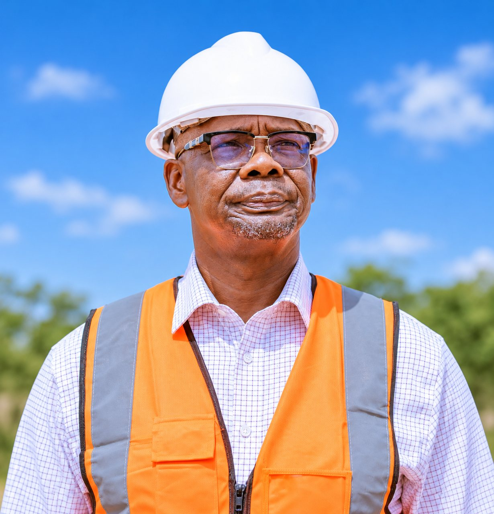

Roads & urban development
Road construction, urban renewal and transport infrastructure have featured among the administration’s stated development priorities.
Read the 2026 budget report ↗THE ARCHITECT OF MODERN NASARAWA
Explore the journey, public service and development priorities of His Excellency, Engr. Abdullahi A. Sule.

A professional journey shaped by engineering, corporate leadership and public administration.
Born in Gudi, Nasarawa State, Engr. Abdullahi A. Sule built a career across engineering, manufacturing, oil and gas, and the sugar industry before entering public service as Governor of Nasarawa State in 2019.
Read the full biography ↗Selected policy priorities and reported developments during his time in public service. Each item links to a source so visitors can explore the details.
Road construction, urban renewal and transport infrastructure have featured among the administration’s stated development priorities.
Read the 2026 budget report ↗Reported initiatives include upgrades to health facilities, strengthening primary healthcare and recruitment of nurses and midwives.
Explore the health sector report ↗The Nasarawa Economic Development Strategy places emphasis on investment, industrial growth, employment and wealth creation.
Read the NEDS background ↗Education and human-capital development are identified as central areas of the state’s development agenda.
Read the budget priorities ↗Two separate major lithium-processing facilities have been reported in Nasarawa LGA, including the 2024 Avatar plant and the 2026 Diamond New Energy facility.
Explore the 2026 commissioning report ↗Reported initiatives include a cassava starch project along the Akwanga–Gudi corridor and a separate cassava industrial hub at Agwada, Kokona.
Read about the Agwada industrial hub ↗NASIDA’s work includes investment promotion, PPP development, the state investment strategy and tracking investment projects across sectors.
Explore NASIDA’s PPP project portal ↗These summaries describe reported initiatives and stated priorities; they are not an independent audit of project completion or impact.
A researched project register drawing on Nasarawa State budget reports, government announcements, NASIDA records and independent news coverage. Project status is stated separately from announcements and proposals.
On mobile, swipe across the project cards to explore the register.
The one-kilometre Lafia flyover and underpass, commissioned by President Bola Ahmed Tinubu in June 2025. The state government reported a project cost above ₦16 billion.
Project report ↗Dualised urban road inaugurated alongside the Lafia interchange and the new State Secretariat complex.
Commissioning report ↗Added to the project register following the latest project update. Earlier Nasarawa State budget records list a liaison office in Kaduna, but the public records reviewed do not establish the construction or commissioning date of the newer facility. The current facility’s scope and delivery date should be confirmed against an official announcement.
Historical Kaduna liaison-office budget record ↗New bypass linking the Jos axis with Mada Hills, Ntsakpe and the Keffi bypass, intended to reduce congestion and accident risks in Akwanga.
Read project report ↗Road network linking key parts of Loko, including the market and Gidan Liman area. Reported contract value: ₦2.8 billion.
Read project report ↗Rural road commissioned in Kokona LGA to improve movement of agricultural produce and connect communities. Reported cost: approximately ₦3.67 billion.
Read project report ↗Includes the 1.7km RCM Primary School Junction–Yelwa Garage link to Andoma Palace and the 2.7km Timber Shade–GSS Odorogya–St. Aloysius Road.
Read project report ↗Market facility reported to include 52 warehouses, restaurant and restrooms, with shop allocation underway following commissioning.
Read project report ↗₦39 billion twin-flyover intervention on the Abuja–Keffi corridor, intended to address chronic traffic congestion. Reported as under construction in July 2026.
Progress report ↗Flyover at the Total Roundabout on the Keffi–Abuja highway, inspected by the governor in August 2026.
Inspection report ↗Road and grade-separation works along the Keffi–Wamba and Jos–Makurdi corridors; project progress has been reported in state updates.
Government project update ↗First major lithium processing facility in Nasarawa, reported at an investment of about US$100 million and processing capacity of 4,000 metric tonnes per day.
Federal government report ↗Separate facility reported at US$250 million with a capacity of 6,000 metric tonnes per day. Not the same plant as the Avatar facility.
Federal government report ↗NASIDA coordinates investment facilitation and PPPs. Its published pipeline includes the Gudi Industrial Park, Nasarawa Meter Manufacturing Plant, NSUK accommodation, Auta Balefi waste facility and Karu Retail & Recreational Mall at differing stages.
Explore the official PPP portal ↗Proposed industrial park with agro-processing, logistics, mineral processing and light manufacturing components. NASIDA’s PPP portal lists it in preparation; it is not presented as completed.
NASIDA project profile ↗Sequoia Farm Limited project announced for cassava cultivation and processing into starch, ethanol, flour, animal feed and bioenergy. Distinct from the Gudi cassava starch initiative.
Federal government report ↗Governor’s remarks in January 2025 described a planned cassava-to-starch factory near Gudi, with site clearing and equipment preparation reported. The available report does not establish that the factory is operational.
Read project update ↗PHC constructed and equipped by Lafia Local Government Council, inaugurated by the governor. The report attributes delivery to the local council rather than the state government.
Voice of Nigeria report ↗Expansion/construction work was inspected by the governor in September 2026. The cited report describes the facility as ongoing at the time of inspection.
Inspection report ↗A specialised university project developed with the Nigerian Institute of Public Relations. The Nasarawa State Government provided the 101-hectare site and committed funding support; NIPR reported construction activity at the Gudi site in 2026.
NIPR ground-breaking report ↗Distribution of farm inputs to more than 8,200 farmers was reported under the N-CARES programme, supporting production through seeds, fertiliser, sprayers and other supplies.
BusinessDay report ↗Equipment commissioned under ACReSAL included a grader, bulldozer, dump truck, low-bed truck, crane and amphibious swamp buggy for erosion, flood and land-degradation interventions.
Federal government report ↗The governor reported that his administration completed critical elements of the inherited airport project, including terminal, apron and perimeter-fencing works.
Project background ↗Listed by the state’s Q2 2025 budget implementation report among completed road projects; the state ministry also published a project update identifying the newly constructed road.
State ministry update ↗These roads are specifically named among completed projects in the state’s Q2 2025 budget implementation report.
Read state budget implementation report ↗State government social-media update, republished by FindGlocal, said the bridge was at finishing stages and would link Awe with Guma LGA in Benue State.
State government post archive ↗Modern bus terminals in Karu and Lafia, identified in the governor’s budget speech as completed and in use.
Governor’s speech ↗One of the neighbourhood modern markets reported as completed and inaugurated, alongside Akwanga and Nasarawa-Eggon markets.
Market development report ↗Neighbourhood markets identified in state and traders’ association reporting as completed and commissioned by 2023.
Market development report ↗The 2025 approved budget lists rehabilitation/upgrading provisions for General Hospitals in Gudi, Azara, New Karu and Uke. Budget provision is not proof that each upgrade was completed.
2025 approved budget ↗Governor inspected the state-owned rice farm as a new cropping season began in August 2026 and met private-sector partners working with the state on farm utilisation.
State government post archive ↗Published NASIDA records include the Nasarawa Technology Village, Husk Power Systems, Asgard Mineral Processing, Greenville LNG/CNG, Karu Retail & Recreational Mall and other investment projects at differing stages.
NASIDA official portal ↗Radio Nigeria reported completion of the five markets in August–September 2026, with a combined reported cost above ₦5 billion. The Awe facility includes lock-up shops, warehouses, open shops, spare-parts shops and cold rooms.
Read completion report ↗Technology-and-housing development in Karu, with housing, a technology hub, power, broadband and social amenities described in project coverage. Its phases should be tracked separately as they are delivered.
Read project feature ↗At the institute’s fourth anniversary in August 2026, the governor announced ₦37 million for starter packs for graduating trainees.
State government post archive ↗The governor’s 2023 budget address stated that the Akurba 330kV power substation had been completed and put into operation, alongside transformer and solar streetlight interventions in communities.
Governor’s speech ↗Coverage of the Doma commissioning events reported that more than ₦2 billion from a federal flood intervention fund, supplemented by state IGR, was used on the critical bridge linking Lafia and Doma.
Radio Nigeria report ↗Radio Nigeria reported that construction of five mini-stadia in five LGAs was at advanced stages in October 2026. The report did not name all five locations, so they are not guessed here.
Read progress report ↗Reported professional experience across industry and business.
Began serving as Governor of Nasarawa State.
Re-elected for a second term as governor.
Create a personalised supporter poster and share it with your community.
Create your poster →